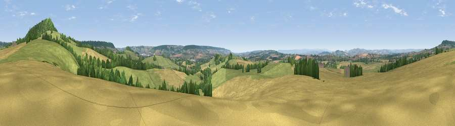

Viewpoint near Payhembury
#11665 in England · top 17% of its area beats it · near Payhembury · access?Where it is
The exact computed spot (ST 10425 01925). Click the marker for map links.
Public access: no public right of way or access land is recorded at this exact spot — it may be on private land. Computed from Natural England's CRoW access layer and OpenStreetMap rights of way — not the legal definitive map. Always verify locally.
The view, rendered

A 360° render of this exact spot computed from the terrain model, tree cover and land cover — summer colours, afternoon light, calibrated against photographs of famous viewpoints. Real trees, hedges and buildings will differ in detail.
The panorama
Grey silhouette: terrain skyline in each direction (720 bearings, Earth curvature and refraction included). Dashed green: skyline with trees (+15 m) and buildings (+8 m) as obstacles. Blue strip: how far the ground is visible on each bearing.
Where the view opens
Wedge length = distance to the farthest visible ground on that bearing (vegetation-aware). Rings at 10, 25 and 50 km.
What fills the view
54% grassland · 32% cropland · 13% woodland · 1% built-up
Angular shares of the visible panorama (visual magnitude), not map area. Landscape diversity 0.44 (0–1 Shannon).
Key numbers
More beautiful places nearby
The staircase of upgrades: each row has a higher view potential than everything closer. Driving times are estimates from straight-line distance, calibrated against real road routing — check an actual route before setting out.
| Place | Direction | Drive | Score |
|---|---|---|---|
| Hembury | NE · 1 km | ~4 min | 75.9 |
| Viewpoint near Tipton St John | S · 11 km | ~21 min | 81.5 |
| Viewpoint near Colaton Raleigh | S · 15 km | ~26 min | 82.1 |
| Viewpoint near Sidmouth | S · 15 km | ~27 min | 83.0 |
| High Peak | S · 16 km | ~28 min | 85.3 |
| Golden Cap | ESE · 32 km | ~49 min | 88.7 |
| The Knoll | ESE · 45 km | ~66 min | 91.0 |
50.80993, -3.27271 · source: screening · position refined by local search. Computed location — check access rights before visiting.